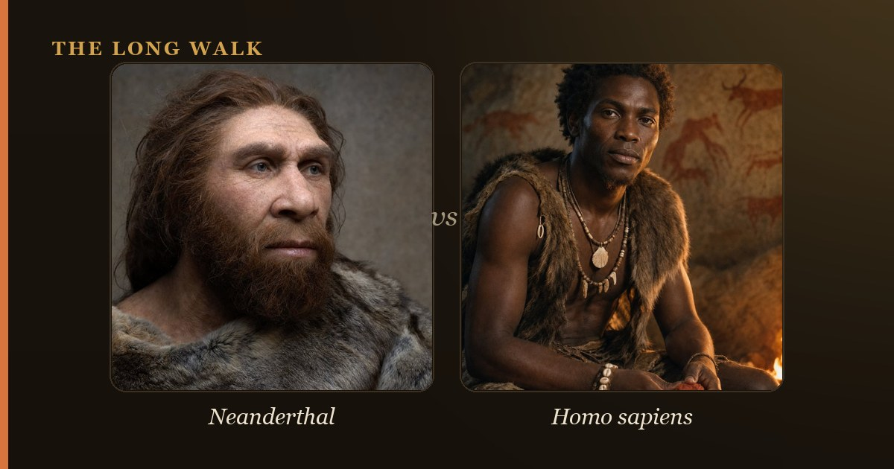

If you have ancestry outside sub-Saharan Africa, you likely carry 1.5–2.1% Neanderthal DNA, inherited from interbreeding 50,000–60,000 years ago. East Asians carry slightly more; sub-Saharan Africans carry very little, though recent back-migration introduced some Neanderthal ancestry even there. Those archaic genes affect your skin, hair, immunity, and disease risk—and consumer DNA tests count Neanderthal variants, but not in the same way scientists do.

Neanderthal DNA is a fingerprint of deep human history written into your genome. Everyone whose ancestors left Africa and spread across Eurasia picked up DNA from Neanderthals, our closest extinct relatives. This archaic ancestry did not come from recent mixing—it happened once, roughly 50,000 to 60,000 years ago, when modern humans encountered Neanderthals in the Near East and the eastern Mediterranean. Since then, that Neanderthal DNA has been shuffled and diluted through populations, but it remains detectable in nearly every non-African person alive today.
The amount you carry—typically 1.5% to 2.1%—might sound small, but it represents actual genes that shape your health, appearance, and evolutionary trajectory. No two people carry identical Neanderthal segments; collectively, though, humans have preserved enough archaic variants that geneticists can reconstruct roughly 20% to 40% of the entire Neanderthal genome. That makes every living person a walking archive of a extinct species.
| Population | Typical Neanderthal DNA | Notes |
|---|---|---|
| Sub-Saharan Africans | ~0.3% | Minimal direct Neanderthal ancestry; small amounts from recent back-migration of Eurasians into Africa |
| Europeans | 1.8–2.4% | Moderate Neanderthal ancestry; substantial variation between individuals and regions |
| East Asians | 2.3–2.6% | Highest Neanderthal ancestry; possibly from a second gene-flow pulse or weaker dilution by later populations |
| South Asians | 1.8–2.7% | Variable, reflecting complex mixing between European and East Asian ancestry patterns |
| Indigenous Americans | ~2% | Inherited from East Asian ancestors; no direct Neanderthal contact in the Americas |
| Melanesians & Papuans | ~2% Neanderthal plus Denisovan | Carry both Neanderthal and substantial Denisovan DNA from mixing in Southeast Asia and Oceania |
So how much Neanderthal DNA do you really have?
The most honest answer: it depends on your ancestry, and you probably carry somewhere in the 1.5–2.1% range. That 2% figure, familiar from popular science and DNA tests, is a rough average for most non-African populations. But individual variation is real—some people carry 0.5% less, others 0.5% more. East Asians and Oceanians tend toward the high end; Europeans sit in the middle; sub-Saharan Africans carry very little.
This DNA is not a contiguous block. Instead, it is scattered across your genome in fragments, like shards of pottery at an archaeological site. A Neanderthal segment on one chromosome might be tens of thousands of base pairs long; another might be just a few thousand. Your genome is a mosaic, and your ancestry test is reading that pattern.
Why do East Asians carry more Neanderthal DNA?
East Asians consistently show higher Neanderthal ancestry—around 2.3% to 2.6%—than Europeans. The reason is not yet certain, but geneticists have proposed several explanations. One possibility is that modern humans and Neanderthals interbred twice: once in the Near East, producing the ancestors of all non-Africans, and again in Central Asia or the eastern Mediterranean, specifically affecting the ancestors of East Asians. Another theory suggests that later migrations into Europe and mixing with other populations diluted Neanderthal ancestry more strongly there than it was diluted in East Asia.
It is also possible that some Neanderthal genes were beneficial in colder or more resource-constrained environments, allowing them to rise in frequency among East Asian populations. Natural selection can amplify rare variants over thousands of generations, and Neanderthals were adapted to ice-age Europe—traits like metabolism and cold tolerance might have been advantageous as modern humans expanded across northern Eurasia.
Wait—do Africans have Neanderthal DNA?
For years, the answer was no: sub-Saharan Africans were thought to have zero Neanderthal ancestry because Neanderthals never lived in Africa. Modern humans evolved there in isolation from Neanderthals, so the logic seemed airtight. But in 2020, geneticist Sriram Sankararaman and colleagues discovered that African populations do carry a small amount of Neanderthal DNA, roughly 0.3% on average. How? Through back-migration. Eurasians—who had acquired Neanderthal DNA after leaving Africa—later moved back into Africa and mixed with local populations, carrying archaic DNA with them. This finding rewrote the story of human admixture and showed that even "isolated" populations were not immune to the genetic echoes of ancient contact.
What do those Neanderthal genes actually do?
Neanderthal DNA is not inert—it shapes who you are. The variants affect skin pigmentation and hair color, likely making Neanderthals and their modern hybrids lighter-skinned and red-haired in northern latitudes. Immune function is another major category: Neanderthal alleles modulate the innate immune response and populate the HLA system, which recognizes pathogens. In 2020, researchers discovered that a Neanderthal-derived haplotype on chromosome 3 was linked to severe COVID-19, while other archaic variants provide protection against certain infections. Blood clotting, lipid metabolism, and bone growth are also touched by Neanderthal genes.
Many Neanderthal variants sit in non-coding regions—introns, regulatory elements, far from any gene. But "non-coding" does not mean non-functional. These regions fine-tune when and where genes turn on and off. A single nucleotide change in a promoter or enhancer can shift your susceptibility to diabetes, Crohn's disease, or depression. The full catalog of Neanderthal disease associations is still being written.
Notable health connections
- Immune response: Neanderthal variants in the innate immune genes TLR1, TLR6, and others increase or decrease inflammatory capacity
- Blood clotting: Archaic alleles on chromosome 6 and elsewhere affect thrombosis and wound healing
- Metabolism: Neanderthal haplotypes influence lipid levels and glucose regulation
- Neurological traits: Some Neanderthal variants associate with mood, cognition, and neuropsychiatric conditions
Ancestry deserts: where Neanderthal DNA cannot survive
Not all of the genome is equally friendly to Neanderthal DNA. Geneticists have identified "Neanderthal deserts"—regions where archaic variants are almost completely absent. The X chromosome is a famous example: it carries little Neanderthal ancestry, even though the autosomes are saturated with it. Why? The leading explanation involves reduced male fertility in Neanderthal-modern hybrids. If male offspring from these crosses had lower fitness, natural selection would purge Neanderthal variants from genes active in the testes and sperm production. Over thousands of years, those regions would go clean.
This pattern is strong evidence that hybrids between species faced real reproductive costs, even if they were viable overall. It suggests that Sapiens and Neanderthals were diverging on the molecular level—their proteins and regulatory networks were drifting apart, and when they mixed, some combinations did not work well. Yet we persist, carrying their DNA anyway.
What a DNA test really tells you
If you have taken a consumer DNA test—through 23andMe, AncestryDNA, MyHeritage, or another company—you may have received a report saying something like "You carry Neanderthal DNA in X number of variants" or "You carry more/fewer Neanderthal variants than 95% of people." These numbers are not direct estimates of your Neanderthal percentage. Instead, they count how many Neanderthal alleles you carry at specific SNP positions that the testing company has chosen. The count depends entirely on which SNPs they test, so two companies may report very different numbers for the same person.
Consumer reports are useful as a novelty and a conversation starter, but they are not comparable to the peer-reviewed estimates you will find in scientific papers. Researchers use whole-genome sequencing and sophisticated statistical methods—like finding segments of high linkage disequilibrium with Neanderthal genomes—to quantify archaic ancestry. If you want a rigorous estimate, download your raw DNA data and use a tool like neandertal.net or an open-source pipeline to calculate it yourself.
The deeper story: ancient contact rewrote our biology
Neanderthal DNA in your genome is not just a curiosity—it is evidence of one of the most consequential encounters in human history. Modern humans and Neanderthals were different enough to have evolved separately for hundreds of thousands of years, yet similar enough to produce fertile offspring. That rare overlap window gave us a genetic gift: traits already tested by Neanderthals' 350,000 years of existence in harsh ice-age climates. Immune genes, metabolic flexibility, and cold tolerance flowed into the modern human gene pool.
Today, as your body navigates pathogens, temperature, and nutrition, you are relying on ancient wisdom encoded in your cells. Your 2% Neanderthal DNA is a partnership between two extinct humanitys—a collaboration written so deeply into your biology that you probably never think about it. But it is there, shaping your health, your appearance, and your place in the vast tree of human evolution.
Curious about your own archaic ancestry? See how Neanderthal genes spread out of the Near East on the migration map.
Explore the family tree →Frequently asked questions
So how much Neanderthal DNA do you really have?
The most honest answer: it depends on your ancestry, and you probably carry somewhere in the 1.5–2.1% range. That 2% figure, familiar from popular science and DNA tests, is a rough average for most non-African populations. But individual variation is real—some people carry 0.5% less, others 0.5% more.
Why do East Asians carry more Neanderthal DNA?
East Asians consistently show higher Neanderthal ancestry—around 2.3% to 2.6%—than Europeans. The reason is not yet certain, but geneticists have proposed several explanations. One possibility is that modern humans and Neanderthals interbred twice: once in the Near East, producing the ancestors of all non-Africans,…
Wait—do Africans have Neanderthal DNA?
For years, the answer was no: sub-Saharan Africans were thought to have zero Neanderthal ancestry because Neanderthals never lived in Africa. Modern humans evolved there in isolation from Neanderthals, so the logic seemed airtight.
- Green, R.E. et al. (2010). 'A draft sequence of the Neandertal genome.' Science 328. science.org
- Vernot, B. & Akey, J.M. (2014). 'Resurrecting surviving Neandertal lineages from modern human genomes.' Science 343. science.org
- Smithsonian Human Origins — Ancient DNA and Neanderthals. humanorigins.si.edu